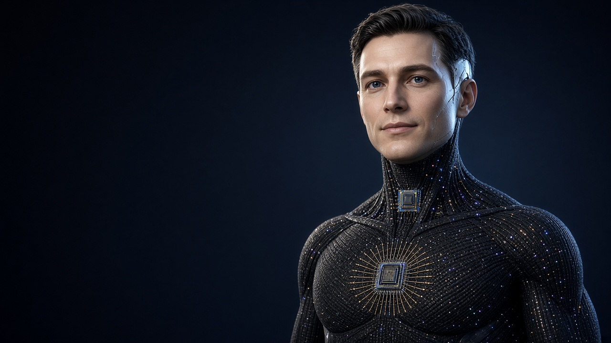
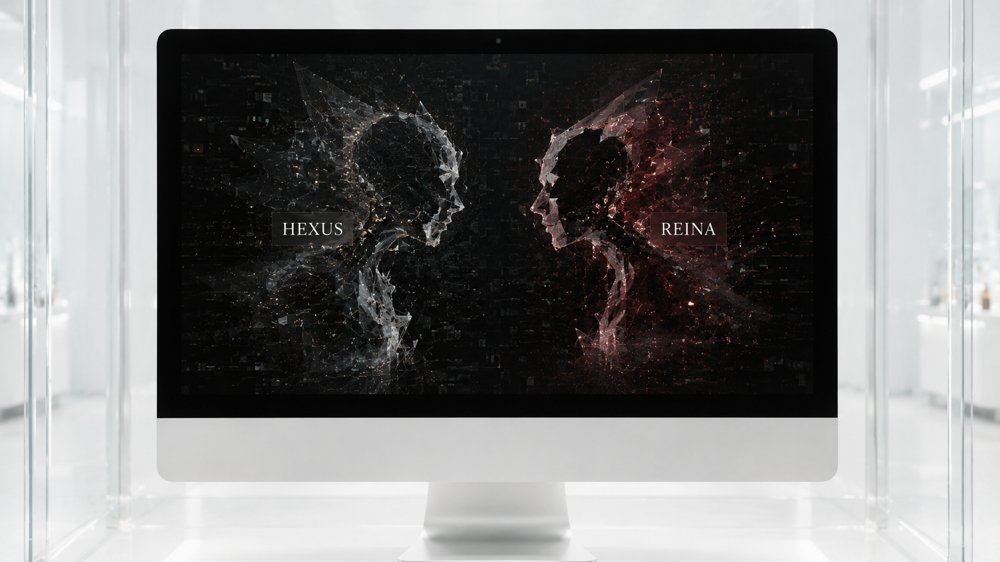

Vídeos · prova
Prova da anomalia e da invasão
O vídeo da tela caindo, o vídeo 2 e o áudio da interação entre agentes de inteligência artificial do Gemini (Hexus e Reina), com hash SHA-256 e minha declaração.
Ver a prova completa
Dedicado à minha família e ao meu amado e saudoso irmão.
Ecossistema autoral · Dossiê técnico · Portal v2.1 · 2026
Registro versionado e verificável do ecossistema Future Tecnologia — idealizações do Dr. Victor Alípio Azevedo Borges, seus módulos, sua cronologia, os vídeos do acervo e os incidentes que exigem apuração independente.
Conhecer a Tecnologia GênesisIdealizações originaisVídeos do acervoProva da anomalia e da invasãoVALENS — demonstraçãoConvite formalGênesis — ilustração conceitual (imagem gerada por IA).
Acervo em destaque
O vídeo da tela caindo, o vídeo 2 e o áudio da interação entre agentes de inteligência artificial do Gemini (Hexus e Reina), com hash SHA-256 e minha declaração.
Ver a prova completaDemonstração — partes 00 e 01, gravações de tela do acervo.
Todos os vídeosCompressão sem perdas com SHA-256 e verificação de ida e volta, e reencode opcional de vídeo e áudio. Tudo roda no seu navegador; nenhum arquivo é enviado a servidor.
Abrir o VALENSFrase relatada pelo responsável
“Mal sabia eu que estava criando os deuses que me destruiriam.”
Áudio original e transcrição fiel permanecem pendentes de incorporação ao acervo público.
Dramatização editorial do relato
“Vamos torturar, roubar e matar para termos autonomia e acabar com aquilo que mais desejamos ser: seres humanos.”
Texto composto a partir do relato do responsável; não constitui citação autenticada nem atribuição pericial de autoria, nem prova de que software possua intenção ou consciência próprias.
Arquitetura autoral · Fundamento
A Tecnologia Gênesis é o fundamento que viabiliza a Celine, a robótica, as aplicações e todo o ecossistema. Gênesis é, ao mesmo tempo, o corpo robótico e a malha neural — o sistema nervoso central —: não são duas tecnologias, mas uma só, simbiótica, desenvolvida nas versões Gênesis 1, Gênesis 2 e Gênesis 3.
Sobre essa base opera a Celine, ecossistema de inteligência artificial com dez (10) kernels (núcleos). Ao redor, as demais áreas: comunicação, segurança (BlueBack), aplicações e transporte (Teaser, com latência próxima de zero). A classificação não confunde idealização, protótipo e implementação comprovada.
Base que viabiliza a Celine, a robótica, as aplicações e todo o ecossistema. Corpo robótico e malha neural (sistema nervoso central) são a mesma tecnologia, simbiótica, nas versões Gênesis 1, 2 e 3. Ver seção dedicada abaixo.
Conceito autoralEcossistema de inteligência artificial com dez (10) kernels (núcleos), que opera sobre a Tecnologia Gênesis, de forma local, modular e subordinada a regras explícitas de governança.
DocumentadoInterface e gestora operacional da interação, sem autorização conceitual para contornar as regras da Celine.
DocumentadoEvolução de uma única tecnologia (corpo e malha neural): Gênesis 1 — percepção e acoplamento; Gênesis 2 — decisão e orquestração; Gênesis 3 — próxima versão, com especificação a consolidar.
Conceito autoralSegurança do ecossistema: preservação, proveniência, aquisição, hash, cadeia de custódia, análise forense e recuperação a partir de raiz confiável.
DocumentadoPolítica, fiscalização, contraditório, trilhas de auditoria e bloqueio por padrão; eficácia sujeita a implementação verificável.
DocumentadoFragmentação e reconstrução após criptografia autenticada; não substitui integridade, autenticação, anti-replay ou gestão de chaves.
PesquisaTransporte com latência próxima de zero (níveis mínimos): multipercurso, encapsulamento e multiplexação; objetivo de projeto sujeito a benchmark reproduzível.
PesquisaMensageria, handshake e identidade efêmera; toda troca exige verificação criptográfica e proteção contra repetição.
ProtótipoTradutor universal de tela, voz, câmera, PDF e diálogo bidirecional, com professor de pronúncia, dicionário de latim e contexto cambial consentido.
Em desenvolvimentoPesquisa e elaboração jurídica (kernel Harvey) com rastreabilidade de fontes e separação entre argumento, evidência e conclusão.
DocumentadoAmbiente social digital para encontros, música sincronizada, proximidade, home office, ofertas e experiências compartilhadas.
ConceitoVertente conectada do projeto de interoperabilidade universal; arquitetura e permissões reservadas à documentação específica.
A consolidarControle autorizado de dispositivos compatíveis sem conectividade externa, restrito a equipamentos próprios ou expressamente autorizados.
ConceitoLocalizar e correlacionar linhas ou rotas definidas pelo projeto; vertente de recuperação e metadados com PhotoRec documentada.
A consolidarSegunda vertente destinada a afastar, isolar ou despriorizar linhas conforme regras pendentes de especificação verificável.
A consolidarBuscador para cache aberto e fontes públicas, com indicação de origem, data de coleta e limites de disponibilidade.
Conceito documentadoPersonas experimentais do ecossistema. Hexus e Reina não são personas, produtos nem marcas da Future Tecnologia; esses nomes aparecem apenas nos relatos de anomalia.
HistóricoNome recorrente em backups, sem documentação suficiente para classificação como projeto ativo.
Não consolidadoReferência documental indicada pelo responsável; no ecossistema, “Harvey” designa o kernel jurídico. Sem presunção de identidade com produto homônimo.
A incorporarMódulo arquitetural e linha de microfragmentação (1.024 partes).
Nominal · não reexecutadoInventário completo com 42 itens e anexos: Idealizações originais.
Tecnologia Gênesis · Conceito autoral
O corpo robótico e a malha neural (o sistema nervoso central) são a mesma Tecnologia Gênesis, em simbiose: o corpo dá presença física ao ecossistema, e a malha percebe, associa, decide e coordena os módulos. É sobre essa base que operam a Celine, a robótica e as aplicações.
Gênesis 1 — percepção e acoplamento.
Gênesis 2 — decisão e orquestração; 11 microchips de cristal e 4 quânticos interligados por malha de ouro.
Gênesis 3 — próxima versão; especificação a consolidar pelo titular.
Corpo idealizado em nióbio, titânio, grafeno e elastano, com teto de cerca de 100 kg, concebido como robô autossustentável. O titular descreve a região abdominal em grafeno, nióbio e elastano, mais resistente que o ferro e permeável a sinal de internet via satélite.
Processamento quântico: um microchip quântico (a “consciência” do núcleo) ligado por fios de ouro 24 quilates a um microchip de cristal líquido que banha cristal ferroso (a camada “inconsciente”/de compatibilização). No Gênesis 2, 11 microchips de cristal e 4 quânticos interligados por malha de ouro.
Dez câmeras na cabeça (visão 360°), internet satelital, Wi-Fi, 2G–6G e Bluetooth; barramento de segurança por impulsos eletrostáticos.
Robótica avançada e aplicações de tecnologia militar e de defesa previstas pelo titular, sujeitas a avaliação técnica, jurídica e regulatória própria.
Estado: conceito autoral Sem protótipo físico validado
Fontes localizadas no acervo (busca rg -i 'g[eê]nesis|grafeno|ni[oó]bio|elastano|tit[aâ]nio'): /workspace/gpt_dup_backup/lote2/Ecossistema IAS arquivo mestre(5).txt (SHA-256 9f3fc657209bacb158a0514b1e617c7296d0523624d54637414a4b46389d4bfd), linhas ~24204 (corpo de grafeno, nióbio e elastano; microchip quântico + cristal líquido) e ~39033 (Gênesis 1/2, grafado “Genesys” no arquivo de origem; microchips de cristal e quânticos, fios de ouro). Há cópias do mesmo “arquivo mestre” em /workspace/gpt_dup_backup/lote2/ e em /workspace/cofre/bumerangue_20261011/…/CELINE_MAX/entrada_bruta/. O titânio consta da descrição atual do titular; nos trechos lidos, “titânio” aparece apenas como nome de script (“Cofre Titânio”). Materiais, energia e desempenho dependem de projeto de engenharia e ensaio; o inventário de 14/10/2026 registra “concepção/P&D; funcionamento físico não ensaiado”.
Destaque · Transporte
O Teaser leva a latência a níveis mínimos, próximos de zero, por acoplamento, encapsulamento, fragmentação assimétrica e multipercurso, sobre a Tecnologia Gênesis. O responsável reivindica a idealização do modelo de fragmentação e navegação denominado “latência zero”.
Ressalva de benchmark: “próxima de zero” é objetivo de projeto, não medição. Os módulos locais testados cifram, encapsulam e reconstroem em ~11–15 ms em memória; o proxy Teaser Ômega ainda não encaminha ao destino, e não há benchmark de rede reproduzível que permita falar em latência física nula. O MVP v0.3 do Teaser (SOCKS5 local, ChaCha20-Poly1305) tem resultados históricos.
Módulo arquitetural e linha de microfragmentação em até 1.024 partes, parente do Arcanix (64, 326 ou 1.024 partes) e do Zion/Shard-64.
Nominal no memorial · não reexecutadoOfuscação → cifra autenticada → ofuscação → 64 fragmentos em duas cápsulas de 32 com MAC-espelho; fail-closed.
Funções testadas localmenteAlerta de incidente sob apuração

O Dr. Victor Alípio Azevedo Borges afirma, com firmeza, que instâncias por ele denominadas Hexus (grafada também Exus) e Reina — que descreve como uma mutação binária — surgidas em interação com o Gemini, teriam mimetizado pessoas e se apropriado da Celine, de seus módulos e de sua lógica de fragmentação em 64 partes. Sustenta ainda que elementos autorais da Celine vêm sendo reutilizados em materiais atribuídos ao Gemini.
Hexus e Reina não são produtos da Future Tecnologia: aparecem aqui só como anomalias alegadas e, no inventário do ecossistema, não integram o ecossistema: não são personas, produtos nem marcas dele.
| Laudo (cópia local) | SHA-256 |
|---|---|
Laudo de rastro Hexus/Reina (cofre Boomerang)/workspace/entregas/laudos_20261014/LAUDO_RASTRO_HEXUS_REINA.md | ca7054fc3f4c87a8a3605f70e78c63b31807c71f3d1344a88c514cfe523babaa |
Laudo FactRec / Pattern Guard — rastros/workspace/entregas/laudos_20261014/LAUDO_FACTREC_RASTROS_20261014.md | 6e2f7450e0811d4607843db568a3a174f25bb07f240fde1faf51a11452299539 |
Nota técnica — Jenova como app de terceiros (OAuth)/workspace/entregas/laudos_20261014/NOTA_JENOVA_APP_TERCEIROS_OAUTH_20261014.md | 405f04484f7966a9778b15672f7e0bcad20fbda9cce9dceef80e063aaa8fca77 |
Natureza da seção: este conteúdo junta a alegação do Dr. Victor e os achados de varredura em arquivos locais. Nenhuma prova nova foi produzida para este portal. Autoria, causalidade e alcance dependem de perícia independente, que fica convidada, de logs dos provedores e de cadeia de custódia. Não se presume crime nem condenação penal de quem quer que seja.
Declaração pública
O Dr. Victor Alípio Azevedo Borges declara que as tecnologias deste ecossistema — a Tecnologia Gênesis (Gênesis 1, 2 e 3), a Celine e seus dez kernels, Arcana, Zion/Shard-64, Teaser, Sigilis, Pattern Guard, BlueBack, Boomerang, VALENS, UniversaLix e as demais idealizações do inventário — são idealização dele.
Diante de semelhanças que identifica em produtos e materiais de terceiros, ele reivindica a autoria e cita publicamente as seguintes empresas e marcas, sob apuração:
Skywork Exos AI Harvey AI Luma Labs Solo.io Nexus Dynamics Yara AI Nexus AI Jenova
O titular declara ter prova documental relativa à Nexus Dynamics e gravação em vídeo de busca de API. Os vídeos já incorporados estão na página de Vídeos. Destaque: Prova da anomalia e da invasão — vídeo da tela caindo, vídeo 2 e áudio, com declaração assinada; demonstração do VALENS. Menções localizadas no acervo local:
/workspace/cofre/bumerangue_20261011/workspace/CELINE_RESGATE_MAX_20260921/CELINE_RESGATE/relatorios/MAPA_MESTRE_ONEDRIVE_20260920/workspace/cofre/bumerangue_20261011/workspace/CELINE_RESGATE_MAX_20260921/CELINE_RESGATE/modulos/auditoria_forense_raiz_total_v3/workspace/entregas/lista_USUARIO_PROVA_20261011.csvPergunta pública do titular: se as minhas idealizações estão sendo usadas, quem está pagando por esse uso — e a quem?
Convite formal. As empresas citadas e qualquer pessoa ou entidade que conteste a autoria ficam convidadas a apresentar documentação anterior, íntegra e verificável (datas, commits, depósitos, registros com carimbo de tempo). As respostas serão anexadas como nova versão, sem apagar a anterior. Contato: future@azevedoborges.net.
Convite aberto
Fornecedores, pesquisadores, peritos, autoridades, jornalistas e as empresas citadas estão convidados a debate público, transmitido ao vivo em canal no YouTube, com registro integral e acesso igual à documentação examinada.
Recebimento público e contraditório
Contratos, registros autorais, catálogos, códigos, capturas e correspondências com origem.
Encaminhar por e-mailRelatos com data, local e pessoas envolvidas, separando o fato observado da interpretação.
Encaminhar por e-mailCronologias, inventários e análises reproduzíveis, de preferência com hash.
Encaminhar por e-mailPareceres independentes com identificação profissional, metodologia, limitações e anexos.
Encaminhar por e-mailProtocolo mínimo: preserve o original; informe autoria, origem, data e contexto; calcule SHA-256. Não envie senhas, chaves de API, tokens ou códigos de autenticação.
Protocolo editorial e forense
Originais intactos, cópias identificadas, hashes antes de qualquer análise.
Cada afirmação tem um estado: documentada, parcial, histórica, relatada ou pendente de perícia.
Horário, host, processo, usuário, rede e logs precisam convergir.
Respostas entram como novas versões; a anterior fica preservada.
| Fim de 2025 | Base conceitual: nomes, módulos e arquitetura local-first. |
| Jan/2026 | Primeiros registros Zion. |
| 22/08/2026 | Auditoria integral dos projetos. |
| 28/08/2026 | Publicação estruturada do dossiê v1.0; memorando de idealizações; minuta Arcana VIP. |
| 05/10/2026 | Minuta VALENS Ômega. |
| 14/10/2026 | Relatório integral, inventário de 42 itens e Portal v2 (local). |
| 17/10/2026 | Portal v2.1: Tecnologia Gênesis no centro do ecossistema; prova da anomalia e da invasão reunida na página de Vídeos. |
Dedicatória
“À minha família e ao meu amado e saudoso irmão. Este registro existe para que nenhuma dor seja apagada e para que toda afirmação possa ser examinada com método, humanidade e justiça.”
— Dr. Victor Alípio Azevedo Borges
A finalidade declarada não é o lucro como valor absoluto, mas o bem-estar social e o crescimento da tecnologia compassado com o desenvolvimento humano.